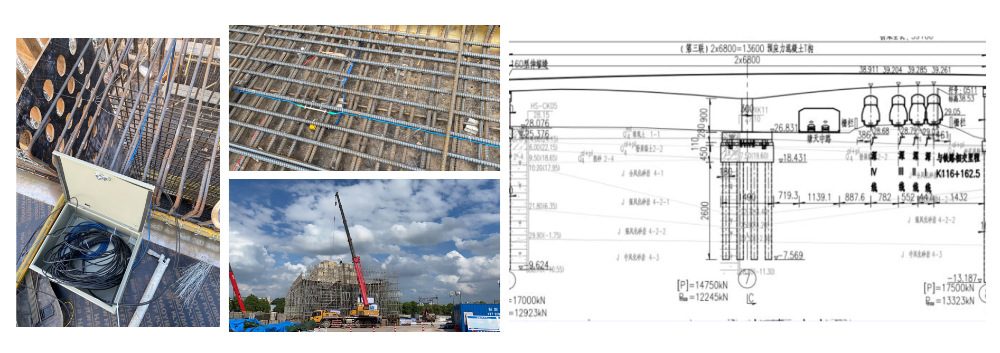
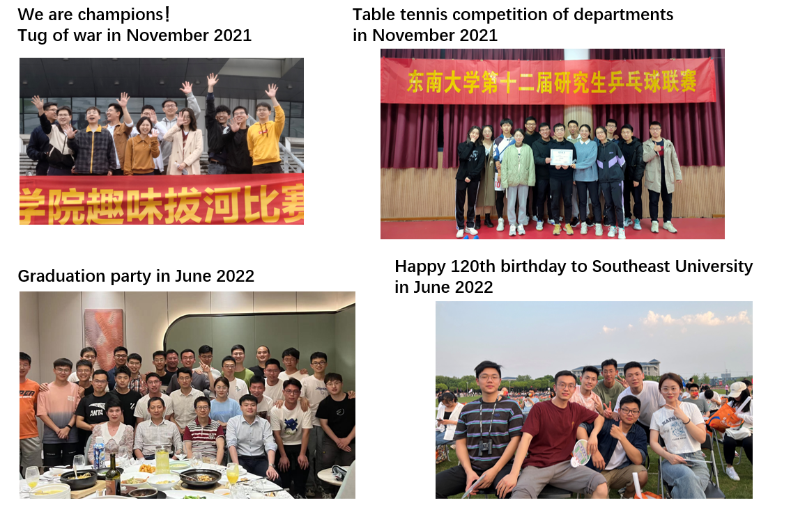

2016 ~ 2020, 本科, 平均成绩 85.0/100 土木工程（B+，全国排名15）, 西安建筑科技大学 2020 至今, 硕士, 平均成绩 88.6/100 土木工程（A+，全国排名并列1）, 东南大学
传感器是结构健康监测系统（SHMSs）最重要的组成部分，然而传感器易受环境影响而损坏或产生异常数据， 这将导致结构健康监测过程中的数据丢失。 我们基于深度学习和数据增强技术开发了一个新的缺失数据修复框架，当SHMSs中多个传感器发生损伤时仍可使用剩余数据进行修复。 该框架可以分别在同一类型传感器（STS）和不同类型的传感器（DTS）补充缺失的加速度或者挠度数据。 该方法在一座混凝土桥梁的健康监测数据集上得到了验证。此外，我们现在正在尝试使用贝叶斯张量学习，用于修复SHMSs中长周期的温度或温致响应缺失和异常数据。
本研究提出了一种基于领域自适应和支持向量机（SVM）的涡激振动（VIV）自动识别方法可以实时或在SHM历史数据集中识别VIV。 特别的是，这种方法不需要目标桥梁上的VIV数据，适用于新建桥梁或者没有记录到VIV数据的桥梁， 并且具有泛化能力强，效率高的优点。所提方法的准确性和效率在大跨度悬索桥的SHM数据集和双自由度动力系统的模拟VIV加速度数据上得到了验证。
Timoshenko梁已经被广泛用于很多工程领域，对此研究人员付出了很多的努力， 但Timoshenko理论的计算误差有待进一步缩小。我们基于经典Timoshenko梁理论， 进一步考虑剪切变形引起的转动惯量，推导了修正Timoshenko梁受迫振动下的动力响应。 研究发现，对于细长梁，剪切变形引起的转动惯量的影响很小；然而，对于具有高刚度的短梁和深梁来说， 其影响不可忽视。我们认为，修正Timoshenko梁理论是计算梁在强迫振动下响应的更合理、更简单和更精确的模型。 此外我们正在尝试使用物理信息嵌入的机器学习方法（PINN）求解受迫振动响应，并进一步实现从监测数据中反算结构参数以达到对结构损伤指标的实时追踪。
1.基于机器学习的桥梁监测数据处理与安全评估研究 (SJCX21_0053), 江苏省研究生科研与实践创新计划, 2021-2022. (主持，在研) 2.大跨缆索体系桥梁涡激振动自适应预警和全过程数字建模, 浙江新一代人工只能实验室开放课题, 2022. (主持，在研) 3.基于人工智能的桥梁监测数据挖掘与建模方法研究(KYCX21_0113), 江苏省研究生科研与实践创新计划, 2021. (参与，在研)
[1] J.L. Hou, H.C. Jiang, C.F. Wan*, L.T. Yi, S. Gao, Y.L. Ding, S.T. Xue*, Deep learning and data augmentation based data imputation for structural health monitoring system in multi-sensor damaged state, Measurement 196 (2022) 111206. [Link] [2] J.L. Hou, X.B. Xiong, E.S. Ge, C.F. Wan*, Y.L. Ding, S.T. Xue. Automatic identification of vortex induced vibration of long-span bridges using kernel mean matching method. Eighth World Conference on Structural Control and Monitoring, 2022. (In press) [3] C.F. Wan*, J.L. Hou, S.T. Xue. Forced vibration of a novel beam model considering the shear deformation induced rotary inertia. (preparing submit to Mechanics of Advanced Materials and Structures) [4] L.T. Yi, Y.L. Ding*, J.L. Hou, Z.X. Yue, H.W. Zhao. Structural health monitoring data cleaning based on Bayesian robust tensor learning. Structural Health Monitoring (under review)
1. 二等研究生奖学金, 东南大学, 2021 2. 三好研究生, 东南大学, 2021 3. 特等奖 of 第十二届陕西省大学生数学竞赛, 2019 4. 一等优秀学生干部奖学金, 西安建筑科技大学, 2018 5. 一等优秀学生奖学金, 西安建筑科技大学, 2017 6. 基准方中奖学金, 基准方中 / 西安建筑科技大学, 2017
东莞环市南路桥梁转体施工监测 2022年4月至6月，中铁四局 / 江苏法尔胜光电科技公司，广东省东莞市
我喜欢打乒乓球，初中时获得 国家二级运动员 称号。我有许多爱好，包括健身、哲学、嘻哈音乐等等。
Welcome to my website!